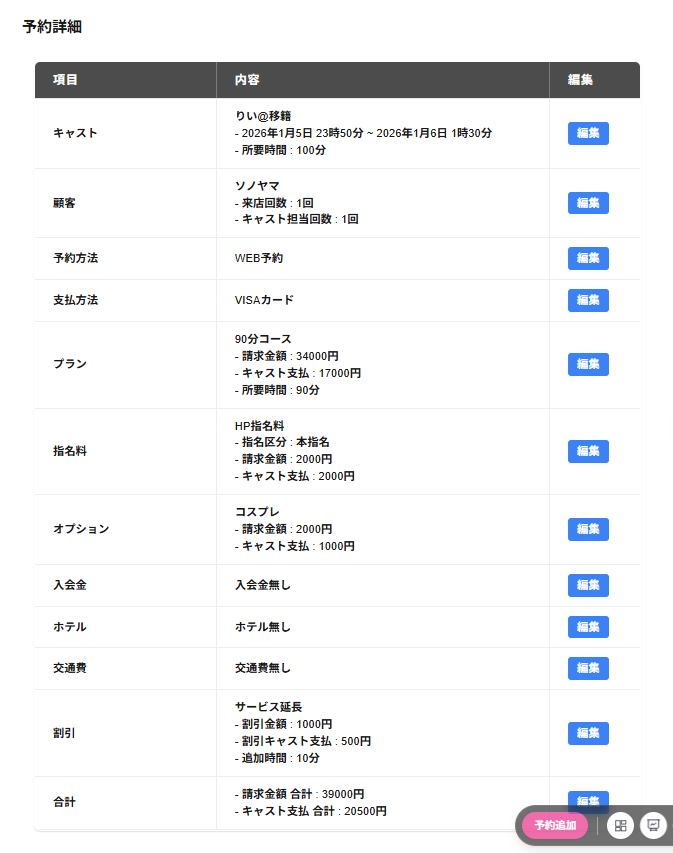

未選択 予約詳細・接客詳細・予約詳細について以下の項目が表示され、編集したい項目の行をクリックすると編集したい項目の編集ができます。
※未選択 予約詳細の場合は、画面左上に未選択 予約割当と表示されます。
※接客詳細の場合は、画面左上に接客詳細と表示されます。
※予約詳細の場合は、画面左上に予約詳細と表示されます。
※実行済み予約を選択した場合は、画面右上に実行済みの予約ですと表示されます。
※実行済み予約は編集をすることができません。
※取消済み予約を選択した場合は、画面右上に取消済みの予約ですと表示されます。
・キャスト
予約・接客のキャストの編集と開始日付/時刻と終了日付/時刻の編集ができます。
※未選択 予約の場合は編集の列に割当と表示されます。
割当をクリックすると、キャスト未選択 予約割当の画面が表示されキャストを割当と開始日付/時刻と終了日付/時刻の編集と予約取消をすることができます。
・顧客
顧客の追加と編集をすることができます。
・予約方法
予約方法 を編集することができます。
・支払方法
支払方法を編集することができます。
※店舗情報で支払い方法を未使用にしている場合は、支払方法の項目は表示されません。
・プラン
プランを編集することができます。
・指名料
指名料を編集することができます。
・オプション
オプションを編集することができます。
・入会金
入会金を編集することができます。
※店舗情報で入会金を未使用にしている場合は、入会金の項目は表示されません。
・ホテル
ホテルを編集することができます。
※店舗情報でホテルを未使用にしている場合は、ホテルの項目は表示されません。
・交通費
交通費を編集することができます。
※店舗情報で交通費を未使用にしている場合は、交通費の項目は表示されません。
・割引
割引を編集することができます。
・チェンジ
チェンジを編集することができます。
※チェンジをした接客の接客詳細のみに表示されます。
・延長
延長を編集することができます。
※延長をした接客の接客詳細のみに表示されます。
・合計
合計を編集することができます。
